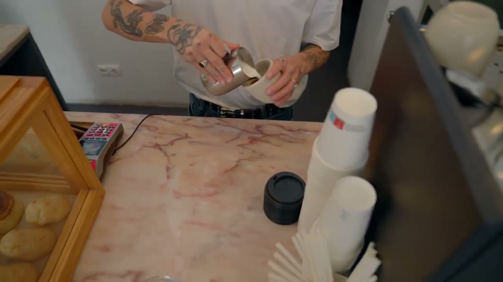
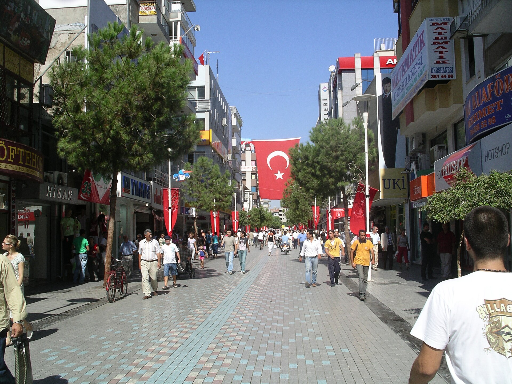
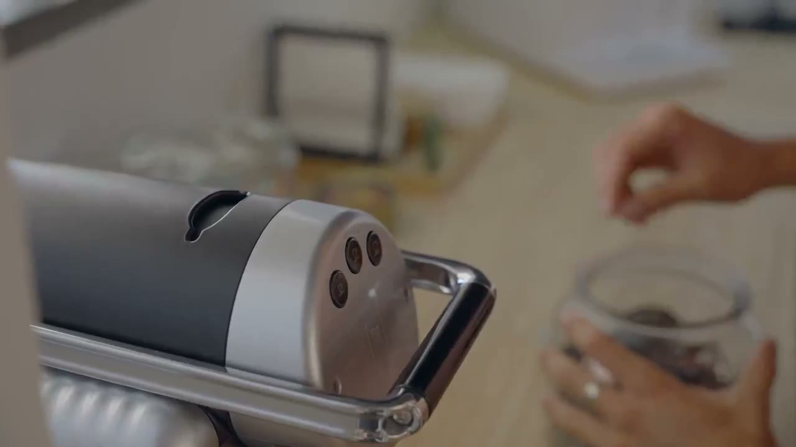
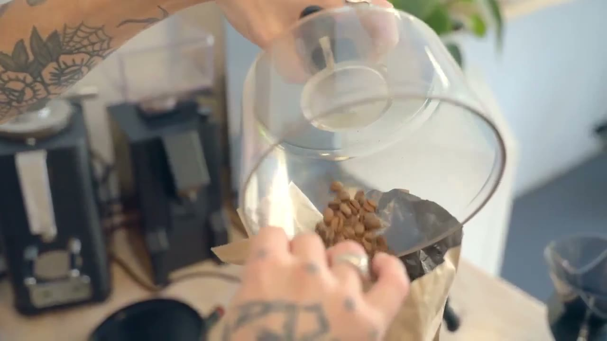
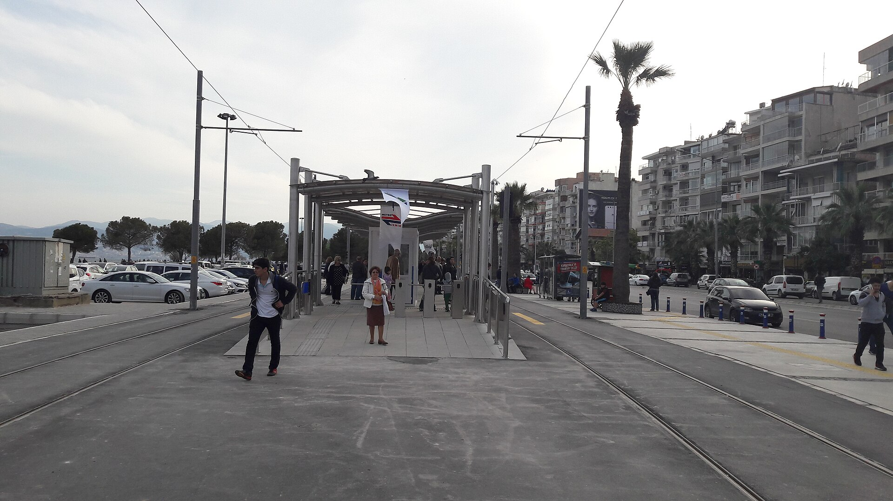

Serpme
09.00–13.00Günlük fırınYerel peynir
Hafta sonu kahvaltısı: fırından sıcak, zeytinyağı ve mevsim reçeli; masaya tek tabakta gelir.
Menüdekişi başı

Karşıyaka, İzmirTürkiye
Günlük kavurma07.00–23.00
Kafe & mutfak
Mevsiminde malzeme, günlük hazırlık, sıcak servis. Kahvaltıdan akşam yemeğine kadar aynı tezgâh, aynı ekip.
Menü · 01
Kahvaltı, öğle ve akşam; her servis kendi saatinde, kendi hazırlığıyla. Fiyatlar menüde yazılı.

Hafta sonu kahvaltısı: fırından sıcak, zeytinyağı ve mevsim reçeli; masaya tek tabakta gelir.

Her gün değişen iki ana yemek; çorba ve tatlı dahil. Mutfak açık, hazırlık masada görünür.

Kısa menü, düşük ışık, uzun sohbet. Yirmi kişiye kadar özel salon ayrılabilir.
Dükkân · 02
Kareler işletmenin kendi vitrininden; bu karelerden 14 saniyelik sessiz bir film üretildi.
Cephe, tabela, giriş.
Tezgâh ve fincan rafı.
Pencere kenarı, gün ışığı.
Ritüel · 03
Her shot 25 saniye. Basınca sayaç başlar; süre dolunca fincan tezgâhta olur.
Her sabah taze öğütülür; kalan çekirdek ertesi güne kalmaz.
25 saniye, 92 °C; basınç ve süre her serviste aynı.
Fincan önceden ısıtılır; süt ayrı gelir.
Hazır · 25 saniye

Mekân · 04
Dükkân küçük; mutfak salonun içinde. Sipariş verirken hazırlığı görürsünüz, sormadan öğrenirsiniz.
Sorular · 05
Telefonla ya da gelince sorun; burada yazan her şey aynı cevabı taşır.
Hafta içi gerek yok. Hafta sonu altı kişiden kalabalıksanız telefonla yer ayırtın; masa 15 dakika tutulur.
Evet, 250 g paket. Kavurma tarihi paketin üstünde yazılı; öğütülmüş ya da çekirdek alabilirsiniz.
Karşıyaka'da, iskeleden yürüme dört dakika. Sokak üstü park yeri akşam saatlerinde daha rahat.
Masa · 06
Tarih, saat ve kişi sayısını yazın; talep WhatsApp mesajına dönüşür. Onay aynı gün gelir.
Bu sayfada hiçbir bilgi saklanmaz.